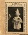

|
 | A lány két csíkba vágta a
virslit. Az egyiket a szendvics maradék üres részére csúsztatta, a másikat pedig újabb két részre
szelte. Az egyik nagyobb lett, mint a másik.
Füttyentett. Az elõszobából apró kaparások, kis
lépések hangja visszhangzott: megjelent egy szürke kis golyó, amelyet azok, akik a nevét is tudják,
kutyának néznek, de az utca embere csak macskának gondolna. Ügyesen két lábra állt és ugrálva kérte
a falatot. Azonban nem csak õ érkezett: jóval késõbb, lassú, nehéz léptekkel megjelent a
fekete-fehér szõrû társa, a nála valamivel nagyobb, de sokkal idõsebb kutya. Neki már minden lépése
nehéz, fáj a medencéje. Néha még aludni is fáj neki, ráadásul olykor görcsök is kínozzák. Nincs pénz
a meggyógyítására, elaltatni pedig senki sem meri elvinni.
Az öreg kutya nem ugrál a
falatért. Csak a szemével kéri, de a farka ugyanúgy jár, mint néhány évvel ezelõtt. A lány nem
szereti õket. Elege van ezekbõl az állatokból, mert mindig láb alatt vannak: régen egész nap a
gazdájukkal lehettek, de késõbb egyre többet kellett dolgozni és egyre kevesebbet volt otthon velük
bárki. Néhány év múlva egész nap csak magukban maradtak. A szobatiszta kutyák néha foltot hagytak a
kõpadlón. Mégse változott semmi: a pénz egyre kevesebb lett, a család egyre többet dolgozott. Aztán
a falka egyik tagja is elment. Elõtte sokat veszekedtek éppen amiatt, ami ezeket a kutyákat a
legkevésbé sem érdekli. Nem tudják, hogy mi az a pénz, csak azt, hogy velük már kevesebbet
foglalkoznak. Amikor otthon is vannak, inkább fekszenek ingerülten. Megtanultak együtt élni
ezzel.
A kisebb kutya még mindig ügyesen kérte a víz és szója furcsa kemikáliákkal összegyûrt
keverékébõl készült virslifalatot. A lány bár nem szerette egyiküket sem, ha választania kellett
volna, éppen ezt az ugrándozós, erõteljesebb kutyát választotta volna. Tudta róla mindenki, hogy a
törekvõ, a saját érdekeit nézõ, önzõ ember kutyában éppen ilyen lenne. Mégis az ember tehetetlenül
hurcolja magában, hogy a kisállatokat, kis gyermekeket védenie, óvnia kell. Húsgép az ember,
neuronokkal, idegvégzõdésekkel, tisztátlanul saját jellemével.
Ott ugrált elõtte a kisebb
rossz, miközben a nagy kutya türelmesen várta a kisebb falatot. Õ még azt sem szokta megenni: mire
felé kapna, a másik már régen elorozza elõle a falatot, így õ mindig kevesebbet eszik. A lány keze
tétovázott a szájak fölött. Végül a kisebb darabot úgy dobta el, hogy a szürke kutya utána kapjon,
eközben pedig gyorsan a beteg szájába illesztette a nagyobb falatot.
Ez az ember igazsága: a
beteg, elesett szánalmat ébreszt bennünk, segítünk rajta, szívesen meghosszabbítjuk szenvedéseit is.
A halál természetellenes, ijesztõ aktussá merevedett, melyben csövek, különbözõ gyógyszerek és
testnedvek egy idegen, élettelen kórházi szobában eltépik az életet jelentõ méltóságtól az embert. A
beteget vállunkra vesszük, visszük, míg az egészséges a betegségig dolgozik. Az ember gondoskodik a
nála gyengébbekrõl, ha szeret és a jó felé tart. Ezért ember. Nem mindig jól tesszük, de tesszük,
mert másképp nem tudunk létezni.
Magunkon viszont a lehetõ legritkábban tudunk megfelelõen
segíteni. Az egyetlen reménynek kikiáltott szalmaszálat addig szorítjuk, míg tenyerünk vért nem
könnyezik, miközben mellettünk rohannak az esélyek és a felénk nyújtott segítõ kezek is megunják a
várakozást. Szánalmas látvány, amint azért harcolsz, óvsz és vérzel valami helyett, valamit védve,
mert rettegsz, mi lenne, ha igaz lenne a vád: ez sem a megoldás? Akkor már nincs reményed. Még akkor
is kapaszkodsz a remény ideáljába, mikor már tudod, hogy délibáb csupán. Az ember megvédeni kész a
gyengéket, de rettegi a saját tehetetlenségét. Féli az erõseket, mert gyöngének érzi magát.
A
kutya nem hisz elvekben, ember alkotta ideológiákban, csak a szeretetben, melyet feltétel nélkül
biztosít azoknak, akik a munka rabigájában, a pénz nyújtotta égetõ hevületben õket csak a szoba egy
berendezési tárgyaként kezelték. Õk akkor is ott állnak jobb kezünknél, amikor a ballal rájuk
ütünk, mert nem merjük azokat megpofozni, akik hibásak.
Ezt még az is megérzi olykor, aki nem
szereti sem az állatokat, sem az embereket. És õ a nagyobb falat virslit adta a kiskutyámnak. Ezért
szeretem. Mert ember õ és én is.
| | vissza a fõoldalra |  |
| 1 2 3 | |  | | | | | | | | | | | | | | | | | | | | 

|
| | 1 2 3 |  |
|


túraszervezõ
túra-rss
mi ez?

legjobbak
legolvasottabbak
tartalomjegyzék
rss feed

AboryM
Caesar
Count Grishnackh
cscsabi
eürdüngh
Feki
GyalogKakukk
Ishukone
Kadzseszka
LACI1993
Mini
Muska
Rommel
Segi
Takezó
tommylee
vikcee
|